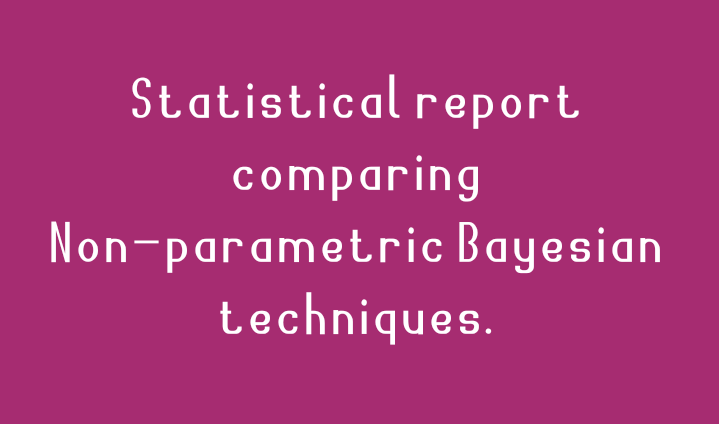
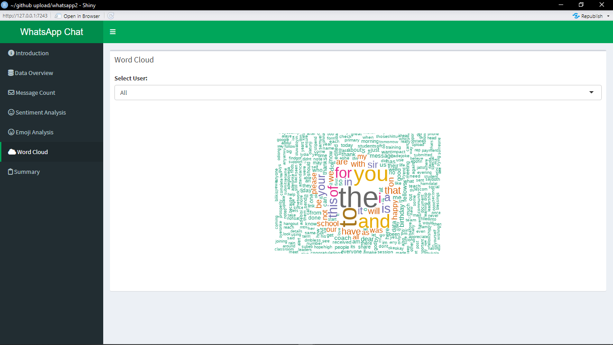
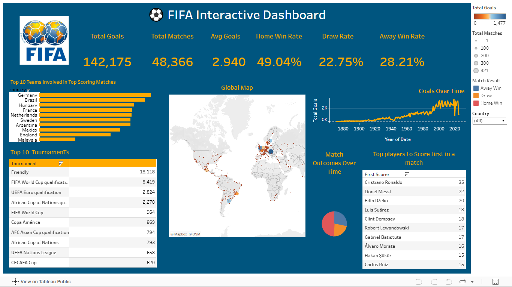
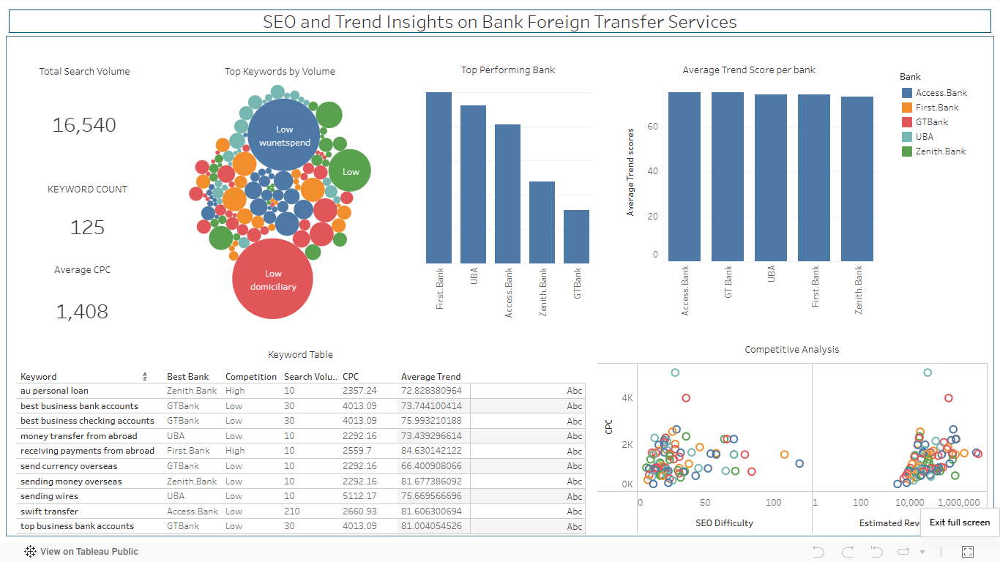
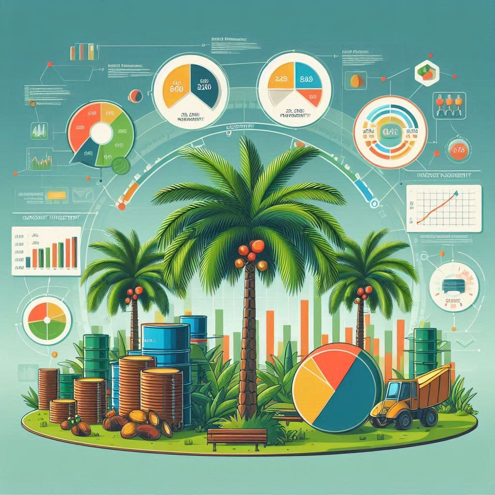
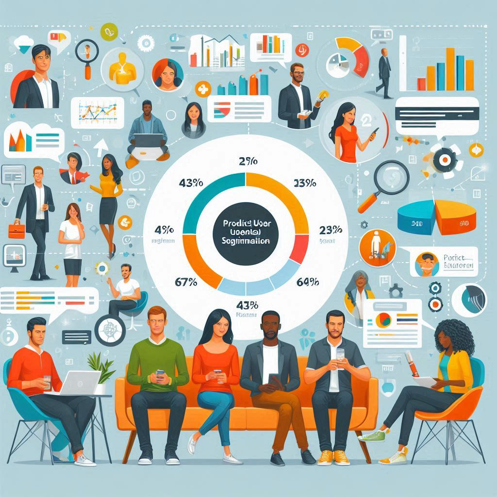
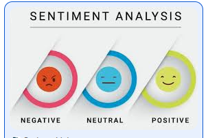
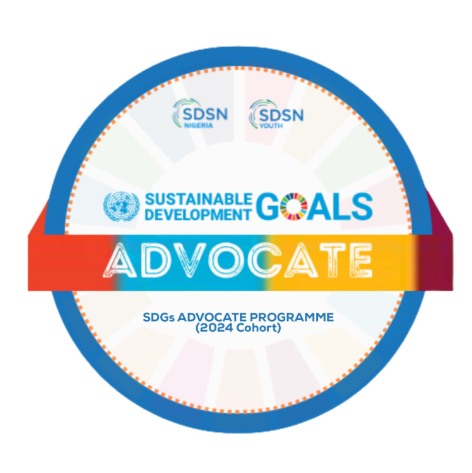
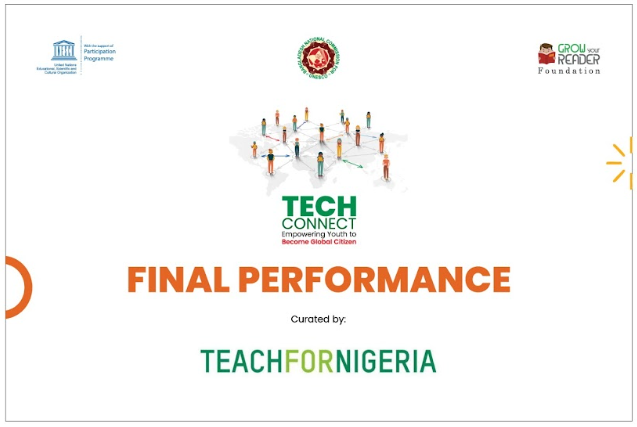

Projects

Discovery of Handwashing
Exploratory analysis of historical medical data uncovering how hygiene practices reduced mortality rates.
View Project →
COVID-19 Global Trends
Interactive visualizations analyzing global spread patterns and country-level impacts.
View Project →
Bayesian Educational Data Analysis
Graduate research applying Bayesian methods to educational performance data.
Read Thesis →
Nonparametric Bayesian Comparison
Comparative evaluation of three nonparametric Bayesian techniques with practical insights.
View Report →
Learner Performance Dashboard
R Shiny dashboard delivering real-time insights into learner engagement and outcomes.
View Dashboard →
WhatsApp Chat Analytics
Sentiment and interaction analysis of chat data using interactive visual analytics.
View App →Retail Sales Performance Analysis
Excel-based analysis evaluating how product and outlet characteristics influence revenue.
View Analysis →Movie Recommendation Feature Engineering
Feature engineering and exploratory analysis on large-scale movie rating data.
View Project →Ride Share Business Analytics
SQL-driven analysis uncovering revenue trends, cancellations, and driver performance.
View Analysis →Election Data Outlier Detection
Geospatial and statistical analysis to detect irregular voting patterns.
View Project →
International Football Analytics
Interactive dashboard exploring 150+ years of international football trends.
View Dashboard →
Banking SEO Analytics
Analysis of search visibility and digital presence of Nigerian banks.
View Dashboard →
Palm Oil Investment Profitability Model
End-to-end feasibility model estimating profitability, ROI, and scale requirements across Nigerian states.
View Report →
Product User Segmentation Analysis
Data-driven user clustering to support targeted outreach and lookalike audience creation.
View Analysis →Interpreting Ambiguous Time Series Data
Advanced reasoning under uncertainty to construct and challenge competing data narratives.
View Report →Predicting Student Dropout Risk
Machine learning model built in R to estimate the likelihood of school dropout based on socio-economic, attendance, and performance data. Aims to help schools take early intervention steps to reduce dropout rates.
View ShinyApp → View Project codes →
Real-Time Mental Health Sentiment Tracker
Python-based NLP model using Reddit and Twitter data to monitor mental health sentiment trends. Leverages Transformer models (BERT) to classify and visualize public mental health signals in real time.
View Project →
SDSN Good Health and Well-being Outreach
Organized interactive sessions, hygiene demonstrations, and physical activities to promote SDG 3 awareness among students at Alaye High School.
Project previewEmpowerEd Teacher Training
Trained teachers across Ogun State on integrating technology into classroom delivery, enabling more engaging and effective lessons.
Project preview
Grow Your Reader Global Exchange
Worked with Grow Your Reader Foundation and Bangladesh National Commission for UNESCO to create global citizenship awareness among students.
Project preview